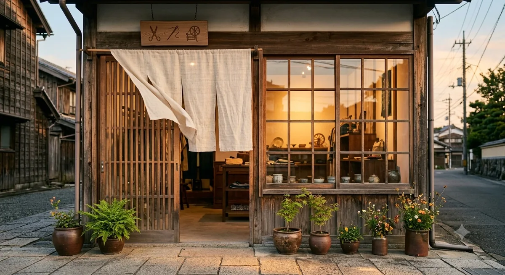
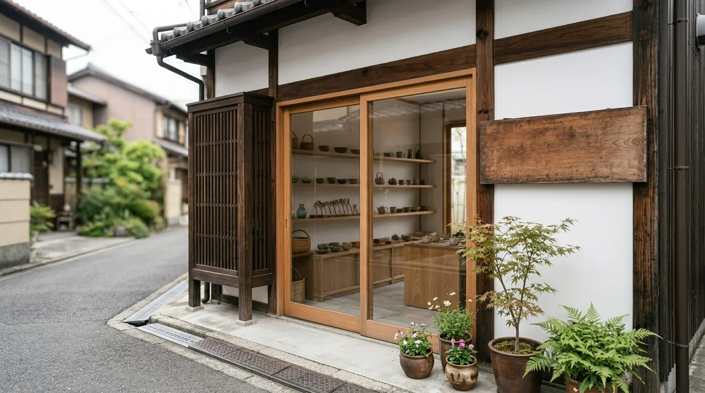
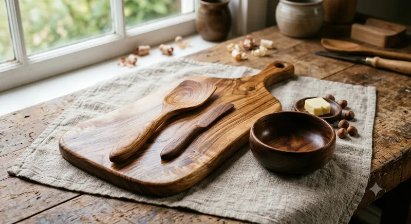
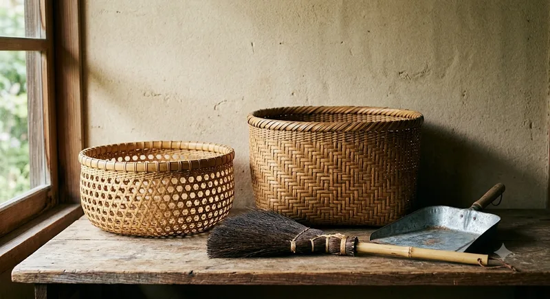

MG-09 ／ 店のこと ／ ACCESS & CONTACT
道順と、お問い合わせ。
地下鉄〇〇駅から徒歩7分。通りに面した木の引き戸が目印です。軒下に小さな木の看板、足元に鉢植えがあります。ご予約は要りません。手当てのご相談だけ、先にご連絡いただけると助かります。

09-2THE WAY
駅から、七分。
地下鉄〇〇駅を出て、大きな通りに沿って歩くと着きます。曲がるのは一度だけです。図の一から四は、下の「駅からの道」の番号と同じです。
STATION — SHOP ／ 7 MIN曲がるのは一度だけです
- 住所
- 福岡県福岡市〇〇区〇〇6-2-9
- 最寄り
- 地下鉄〇〇駅から徒歩7分
- 目印
- 通りに面した木の引き戸軒下に小さな木の看板、足元に鉢植え
- 駐車場
- ありません近くのコインパーキングをご利用ください
- 自転車
- 店先に2台まで
上の図は道順のイメージです。実際の地図・道路・距離とは異なります。
09-3FOUR STEPS
駅からの道、四つ。
-
地下鉄〇〇駅を出ます。
改札を出たら、駅前の道へ。ここから歩いて7分ほどです。
-
大きな通りに出たら、曲がります。
駅前の道をまっすぐ進むと、大きな通りに突きあたります。曲がるのは、この一度だけです。
-
大きな通りを、そのまま進みます。
道なりに進みます。通り沿いに、平屋の一軒が見えてきます。
-
木の引き戸が、店です。
軒下に小さな木の看板、足元に鉢植えがあります。引き戸を開けると、すぐ売り場です。

駐車場はありません。近くのコインパーキングをご利用ください。自転車は店先に2台まで停められます。
09-4INFORMATION
ご来店のご案内。
ご予約は要りません。そのままお越しください。売り場は一度に見渡せる広さです。ゆっくりご覧ください。
- 店名
- 手仕事雑貨店 つむぎ暮らしの道具
- 住所
- 福岡県福岡市〇〇区〇〇6-2-9
- 営業時間
- 11:00〜18:00
- 定休日
- 月曜日ほかに年末年始（12月30日〜1月3日）と、作り手を訪ねるための臨時休業が年に数回あります。休みは店頭の貼り紙とLINEでお知らせします
- お渡し
- 店頭でのお渡しのみ品物をお届けすることは承っていません
- 手当て
- 店頭でのお預かりのみ見てからのお見積りです。先にご相談いただけると、うかがった内容をもとに用意してお待ちできます
- 支払い
- 現金、クレジットカード、QRコード決済
はじめての方へ。
棚のものは、どれも手にとってご覧いただけます。誰がどこでつくったか、どう手入れするかは、その場でお答えします。お一人でゆっくり見たいときは、そう言っていただければ、声をかけずにおきます。
お子さま連れも大丈夫です。割れものが低い棚にもあるので、一言お声がけください。
09-5CONTACT
連絡のしかたは、三つ。
メール、LINE、そして下のお問い合わせフォーム。在庫やお取り置き、手当てのご相談、贈りものの包みのご希望も、どれからでもどうぞ。
お取り置きは3日間まで承ります。手当てのご相談は、うかがった内容をもとに用意してお待ちできますので、先にご連絡いただけると助かります。急ぎのご都合があれば、それも先にお伝えください。間に合わないときは、間に合わないとお答えします。
09-6FORM
お問い合わせフォーム。
ご用件を選んで、内容をお書きください。お返事は、いただいたメールアドレスに差し上げます。定休日をはさむと、お返事が遅くなることがあります。
このフォームはサンプルのため、実際には送信されません。 送信ボタンを押すと、その場で完了の表示に変わるだけで、入力された内容はどこにも届きませんし、保存もされません。ほんとうのご連絡は、メール（info@example.com）かLINEでお願いします。
09-7DAILY — INSTAGRAM
その日の棚は、SNSにも。
入荷や臨時休業のことは、Instagramにも置いています。お越しになる前にのぞいていただくと、その日の棚の様子が分かります。
-
目印通りに面した木の引き戸。軒下の看板が目印です。 -
店日の落ちたころの店先。灯りは18時までです。 -
入荷窯出しの日に届いた、うつわの並び。 -

入荷もりした木工のまな板と匙。荏油で仕上げたものです。 -
作り手工房でのろくろの手元。臨時休業はこのためです。 -

棚かごとほうき。編み目のちがいは棚で見比べられます。
SNSのリンク先はサンプルです。実在のアカウントではありません。掲載しているものは、店頭でご覧いただけます。
09-8BACK TO THE FIRST TAG
これで、十札ひと回りです。
つくって、ならべて、つかって、手当てをして、また使う。十枚目の札はここで終わりますが、めぐりは店の棚で続いています。はじめの札から、また読んでいただいても構いません。